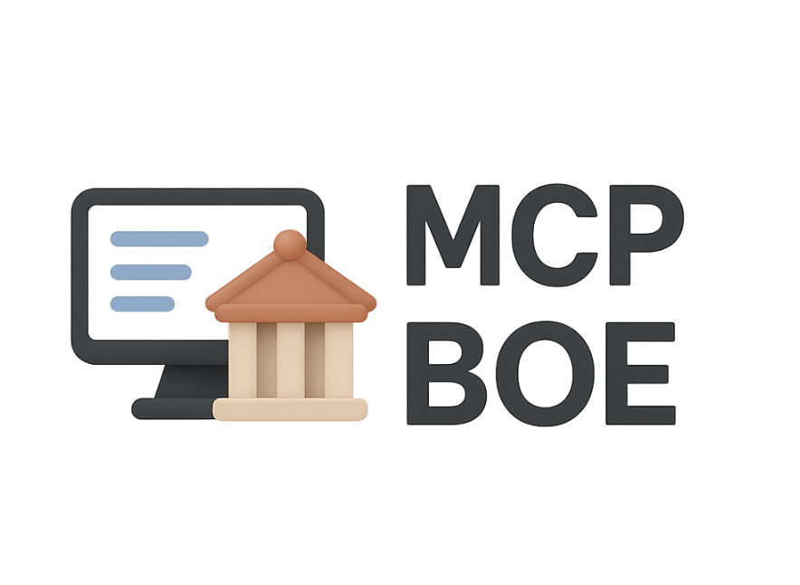
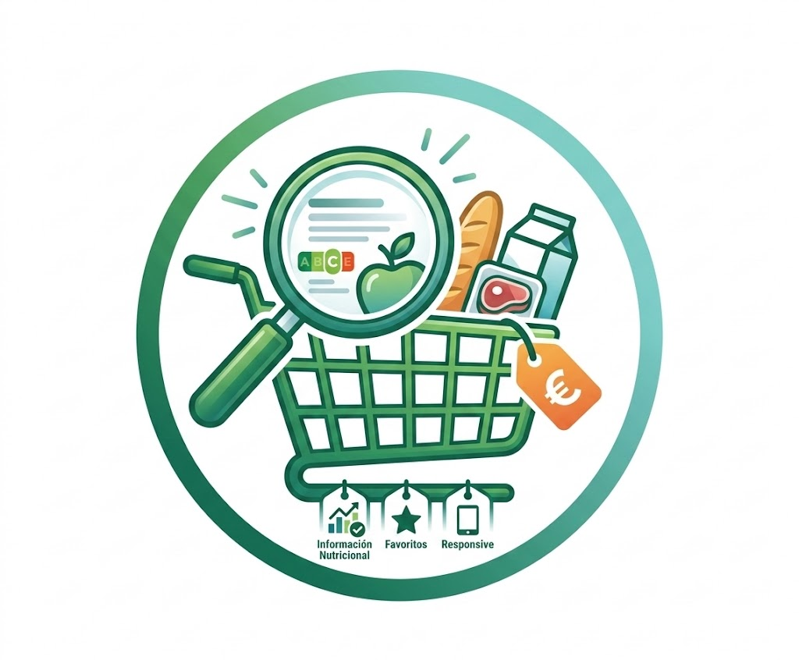
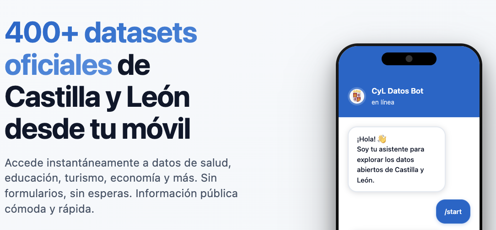

MCP-BOE
Python · FastAPI · MCPServidor Model Context Protocol para el Boletín Oficial del Estado. Permite a Claude y otros LLMs acceder a legislación consolidada, resúmenes diarios y tablas oficiales del BOE mediante su API oficial.
Mis desarrollos más relevantes

Servidor Model Context Protocol para el Boletín Oficial del Estado. Permite a Claude y otros LLMs acceder a legislación consolidada, resúmenes diarios y tablas oficiales del BOE mediante su API oficial.

Aplicación web interactiva para explorar productos de supermercado con búsqueda en tiempo real, información nutricional, gestión de favoritos y diseño responsive con tema claro/oscuro.

Bot de Telegram que proporciona acceso inteligente a más de 400 datasets de datos abiertos de Castilla y León. Incluye búsqueda con sinónimos, alertas automáticas, descargas directas en múltiples formatos y sistema de favoritos.
App de comparación de precios de combustible en tiempo real para encontrar las gasolineras más económicas en España. Utiliza datos oficiales del Ministerio de Industria con geolocalización, mapas interactivos y análisis histórico.